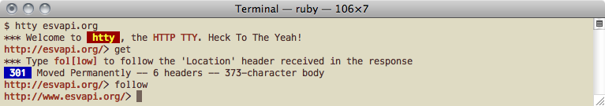
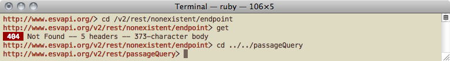
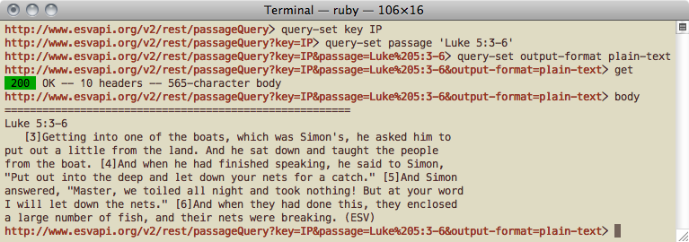
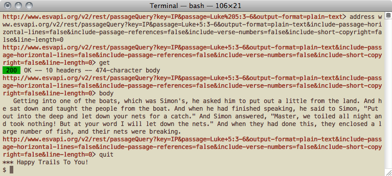
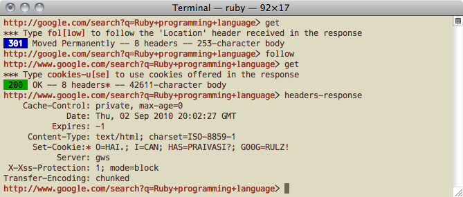
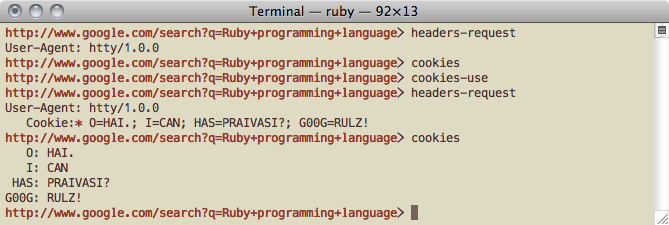
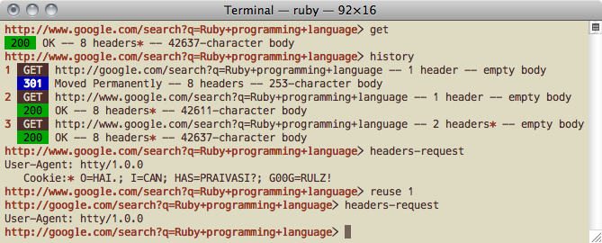
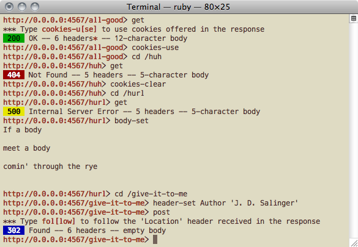
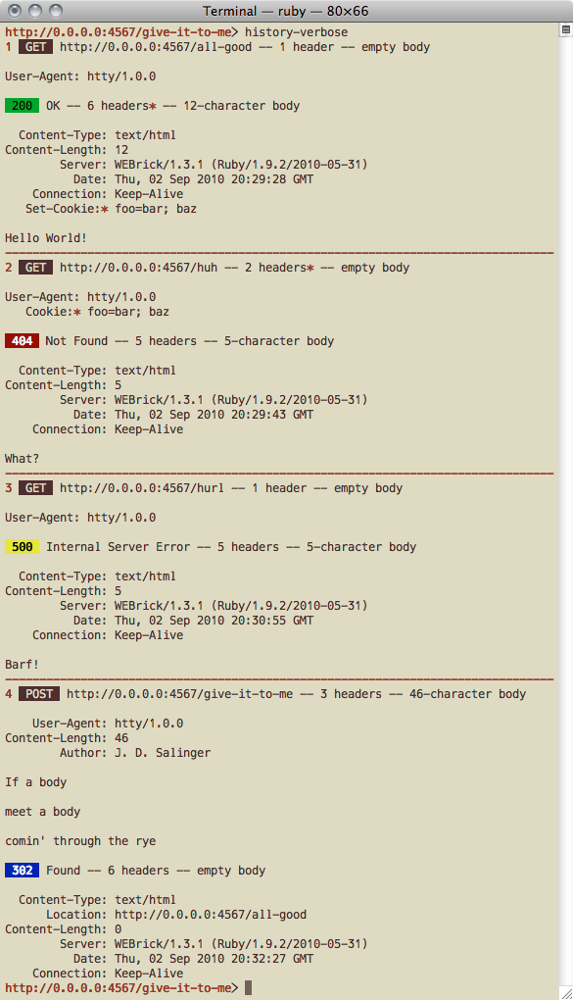
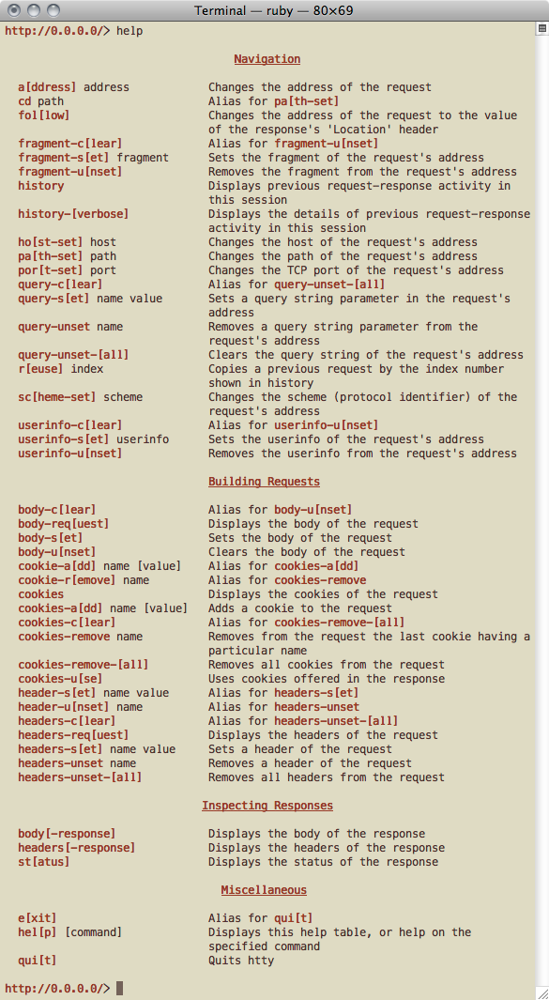

| Path: | README.rdoc |
| Last Update: | Sat Dec 18 15:57:23 -0600 2010 |
__ .__
s s _/ |_| |__ ____
.uef^" :8 :8 .. \ __\ | \_/ __ \
:d88E .88 .88 @L | | | Y \ ___/
`888E :888ooo :888ooo 9888i .dL |__| |___| /\___ >
888E .z8k -*8888888 -*8888888 `Y888k:*888. __________\/_____\/____________________
888E~?888L 8888 8888 888E 888I / | \__ ___/\__ ___/\______ \
888E 888E 8888 8888 888E 888I / ~ \| | | | | ___/
888E 888E 8888 8888 888E 888I \ Y /| | | | | |
888E 888E .8888Lu= .8888Lu= 888E 888I \___|_ / |____| |____| |____|
888E 888E ^%888* ^%888* x888N><888' ______\/___________________.___.
m888N= 888> 'Y" 'Y" "88" 888 \__ ___/\__ ___/\__ | |
`Y" 888 88F | | | | / | |
J88" 98" | | | | \____ |
@% ./" |____| |____| / ______|
:" ~` \/
htty is a console application for interacting with HTTP servers. It‘s something of a cross between curl and the Lynx browser.
It couldn‘t be much easier.
$ gem install htty
You‘ll need Ruby and RubyGems. It‘s known to work well under OS X against Ruby v1.8.7 and v1.9.2 under OS X.
The things you can do with htty are:
Here are a few annotated htty session transcripts to get you started.
This simple example shows how to explore read-only web services with htty.

You can point htty at a complete or partial web URL. If you don‘t supply a URL, \0.0.0.0/ (port 80) will be used. You can vary the protocol scheme, userinfo, host, port, path, query string, and fragment as you wish.
The htty shell prompt shows the address of the current request.
The get command is one of seven HTTP request methods supported. A concise summary of the response is shown when you issue a request.
You can follow redirects using the follow command.

You can tweak segments of the address at will. Here we are navigating the site‘s path hierarchy, which you can do with relative as well as absolute pathspecs.

Here we add query-string parameters. Notice that characters that require URL encoding are automatically URL-encoded (unless they are part of a URL-encoded expression).
The +headers-response+ and +body-response+ commands reveal the details of a response.

There was some cruft in the web service‘s response (a horizontal line, a passage reference, verse numbers, a copyright stamp, and line breaks). We eliminate it by using API options provided by the web service we‘re talking to.
We do a Julia Child maneuver and use the address command to change the entire URL, rather than add individual query-string parameters one by one.
Exit your session at any time by typing quit.
The next example demonstrates htty‘s cookies features, as well as how to review and revisit past requests.

Notice that when cookies are offered in a response, a bold asterisk (it looks like a cookie) appears in the response summary. The same cookie symbol appears next to the _Set-Cookie_ header when you display response headers.

The +cookies-use+ command copies cookies out of the response into the next request. The cookie symbol appears next to the Cookie header when you display request headers.

An abbreviated history is available through the history command. Information about requests in the history includes request method, URL, number of headers (and a cookie symbol, if cookies were sent), and the size of the body. Information about responses in the history includes response code, number of headers (and a cookie symbol, if cookies were received), and the size of the body.
Note that history contains only numbered HTTP request and response pairs, not a record of all the commands you enter.
The reuse command makes a copy of the headers and body of an earlier request for you to build on.
Assume that we have the following Sinatra application listening on Sinatra‘s default port, 4567.
require 'sinatra' get '/all-good' do [200, [['Set-Cookie', 'foo=bar; baz']], 'Hello World!'] end get '/huh' do [404, 'What?'] end get '/hurl' do [500, 'Barf!'] end post '/give-it-to-me' do redirect '/all-good' end
This application expects GET and POST requests and responds in various contrived ways.

Here you can see a request body being specified. Type +body-set+ to enter body data, and terminate it by typing Return three times consecutively.
Also note how different response codes are rendered:

As with the abbreviated history demonstrated earlier, verbose history shows a numbered list of requests and the responses they elicited. All information exchanged between client and server is shown.
You can learn how to use htty commands from within htty.

The help command takes an optional argument of the abbreviated or full name of a command.
Here are some features that are coming down the pike.
The HTTPS code is broken right now. Pardon the dust.
These features will make htty better at screen-scraping.
Using any of the forthcoming form commands will clear any non-form content in the body of the request. Adding at least one URL-encoded form parameter to the request will set the _Content-Type_ header to _application/x-www-form-urlencoded_. Removing all URL-encoded form parameters will remove this header.
You will also be able to pop open a browser window containing request and response bodies.
We‘ll have command history using the arrow keys, command autocompletion, and Tab key navigation of forms.
You should be able to make your own command aliases.
_http-console_ has a nice command-line. We should have an _http-console_ skin for htty.
Your patches are welcome, and you will receive attribution here for good stuff.
Fork the official htty repository located at github.com/htty/htty and send a pull request to htty.
Stay in touch with the htty project by following the Twitter account: get_htty.
You can also get help in the \htty channel on Freenode.
The author, Nils Jonsson, owes a debt of inspiration to the http-console project.
Released under the MIT License.